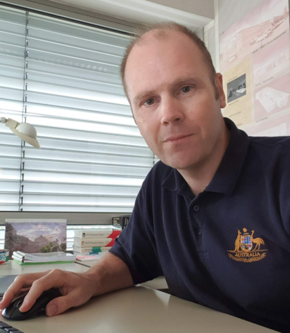

|  |
Emmanuel Lochin
ENAC
7, avenue Edouard Belin CS 54005
31055 Toulouse Cedex 4 France |
 |
Prof. Emmanuel Lochin received his Ph.D from the LIP6 laboratory of Pierre and Marie Curie University - Paris VI in December 2004 and the Habilitation Thesis (Habilitation à Diriger des Recherches) in October 2011 from Institut National Polytechnique de Toulouse (INPT). From July 2005 to August 2007, he held a researcher position in the Networks and Pervasive Computing research program at National ICT Australia, Sydney. He then held a full professor position at ISAE-SUPAERO from September 2007 to March 2020 and has co-founded SPEERYT in July 2018 to stimulate the development and diffusion of an on-the-fly coding scheme named Tetrys. Before SPEERYT, this technology was transferred by TTT to a world leader in Internet content distribution for one million USD.
He is now full professor at ENAC since April 2020 and is also member of TéSA laboratory and computer networking expert in the TeSA scientific committee.

His research interests are mainly related to transport protocols and congestion control with a particular interest for satellite networking.
Last news
Publications
All my publications are available within HAL.
IETF work
All my IETF activity, active or expired IETF drafts and standards, is available here.
Simulation codes and software
This webpage provides source codes, scripts and data linked to my publications research.
Linkages
ISAE-SUPAERO, Université Pierre et Marie Curie, Université de la Réunion, University of Oslo, Macquarie University, University of New South Wales, CSIRO/Data61, INRIA Rhône-Alpes, Thales Alenia Space, CNES, Enensys/Expway, AIRBUS
Honors and Awards
Trophées de la Valorisation de la Recherche - Grand Prix Marthe Condat - Lauréat 2019 du Trophée Transfert de technologie avec Jérôme Lacan et Jonathan Detchart
IEEE Communications Letters exemplary reviewer 2013 and 2015
I am, with Guillaume Jourjon and Patrick Sénac, the recipient of the best paper award of the Multimedia Communications & Home Services Symposium of IEEE International Conference on Communications (IEEE ICC 2007) Glasgow, UK - 24-27 June, 2007
Mention spéciale du jury CFIP2009 à Pierre Ugo Tournoux, CNRS-LAAS et Université de Toulouse pour son article avec Amine Bouabdallah, Emmanuel Lochin et Jérôme Lacan. Tetrys : Un mécanisme de fiabilisation polyvalent
PhD and postdoc students
On going
- Evelyne Akopyan, thèse CNES/TéSA co-encadrée avec l'ENSEEIHT, Architecture d'un réseau résilient dans un essaim de nanosatellites
- Matthieu Petrou, thèse CIFRE VIVERIS, Collection de données et analyse de la qualité d'expérience utilisateur des systèmes de communication par satellite
- Cyril Louis-Stanislas, thèse CIFRE AIRBUS, Utilisation des réseaux aéronautiques commerciaux pour des communications aéronautiques critiques
- Victor Perrier, thèse CNES/ISAE-SUPAERO co-encadrée avec l'ENSEEIHT, Mécanisme de contrôle de congestion LEO/GEO basé sur l'apport des sciences cognitives
- Marina Dehez Clementi, thèse en cotutelle ISAE-SUPAERO, Macquarie University, ENAC, Blockchain for cybersecurity
Alumni
- Frédéric Giroudot, NoC-based Architectures for Real-Time Applications : Performance Analysis and Design Space Exploration, thèse MESR soutenue le 13 décembre 2019
- Bastien Tauran, Sur l'intéraction entre protocoles de transport et fiabilisation couche liaison pour service mobile satellite, thèse co-financée CNES/TAS soutenue le 6 décembre 2018
- Jonathan Detchart, Optimisation de codes correcteurs d'effacements par application de transformées polynomiales, thèse ISAE soutenue le 5 décembre 2018
- Anais Finzi, Specification and Analysis of an Extended AFDX with TSN/BLS shapers for Mixed-Criticality Avionics Applications, thèse DGAC-AIRBUS soutenue le 11 juin 2018
- Antoine Auger, Qualité des Observations pour les systèmes Sensor Webs : de la théorie à la pratique, thèse DGA/Région Midi-Pyrénées soutenue le 20 avril 2018
- Gwilherm Baudic, HINT - from opportunistic network characterization to application development, thèse MESR soutenue le 6 décembre 2016
- Si Quoc Viet Trang, FLOWER, an Innovative Fuzzy LOWer-than-Best-EffoRt Transport Protocol, thèse co-financée CNES/Thales Alenia Space soutenue le 3 décembre 2015
- Victor Alejandro Ramiro Cid, Characterization and applications of random walks over opportunistic networks, thèse BECAS CHILE - ISAE-SUPAERO soutenue le 4 novembre 2015
- Guillaume Smith, Enabling Private Real-Time Applications by Exploiting the Links Between Erasure Coding and Secret Sharing Mechanisms, thèse en co-tutelle TéSA-NICTA soutenue le 4 décembre 2014
- Golam Sarwar, Analysis and Design of Multipath Transport Protocols, thèse en co-tutelle NICTA-ISAE soutenue le 9 juillet 2014
- Nicolas Kuhn, Cross-layer interactions and long delay links : link layer mechanisms and TCP performance, thèse co-financée TéSA-NICTA soutenue le 21 novembre 2013
- Rémi Diana, Routing based congestion control for DTN satellite topology, thèse co-financée CNES/Thales Alenia Space soutenue le 6 décembre 2012
- Pierre-Ugo Tournoux, Protocoles de transports basés sur le Network Coding, thèse LAAS-ISAE soutenue le 15 décembre 2010
- Dino Matin Lopez Pacheco post-doctorat ISAE septembre 2008 à août 2009
- Guillaume Jourjon, Towards a Versatile Transport Protocol, thèse de l'université du New South Wales (UNSW) et de l'Université de Toulouse soutenue le 23 janvier 2008